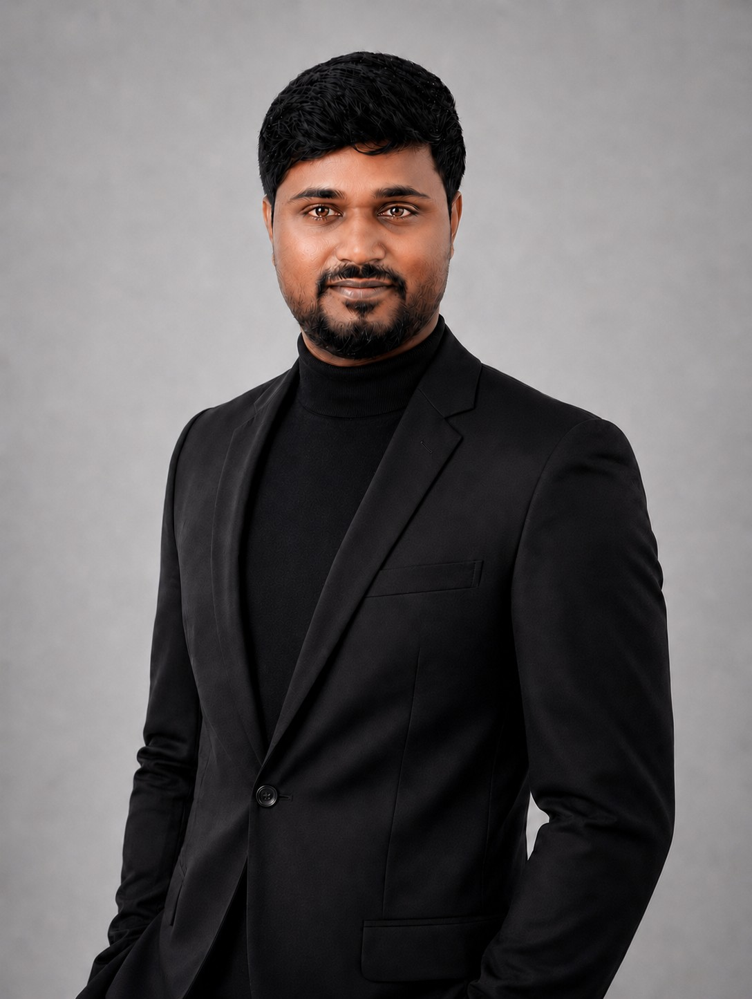

Data Analyst · Business Analytics
I use SQL, Python, Power BI and Tableau to analyse performance, understand customers, and turn findings into clear recommendations.
Full working rights (485)

Linked falling review scores to delivery delays.
Average review 0–5 stars On time4.29 Late2.57 SQL · Power BI Commercial analysis2017 to 2018 comparison.
100K orders across 8 tables.
Cleaned missing data and identified seasonal content patterns.
Python · pandas · Seaborn1.7 stars lower for late orders across the analysed sample.
Incident scope: Feb–Mar 2018 · Analysis of historical marketplace data
Read the analysis & sourceAbout
I currently work as a freelance Data Analyst with DAT Academy in Adelaide. I analyse retail sales, customer behaviour and campaign performance, then turn the findings into Power BI or Tableau dashboards and written recommendations.
I hold a Master's in Artificial Intelligence and Machine Learning from the University of Adelaide, and a Master's in Mechatronics from Tor Vergata University of Rome. Before that I spent sixteen months as a Project Engineer at Wipro Technologies, triaging SAP production incidents for UK industrial clients on a 24/7 roster.
That mix is the point. I can build the model when a model is the right answer, and I can tell when it isn't. Most of the time the answer is a clean query, an honest chart, and someone who can explain it to the person who has to act.
Based in Adelaide, SA. Open to Data Analyst, Business Analyst and Data Scientist roles anywhere in Australia.
Projects
Click any card to see full details
Experience
Education
Technical stack
Open to Data Analyst, Business Analyst and Data Scientist roles anywhere in Australia. Full working rights (Subclass 485), and available to relocate.
Download CV{kind=link}